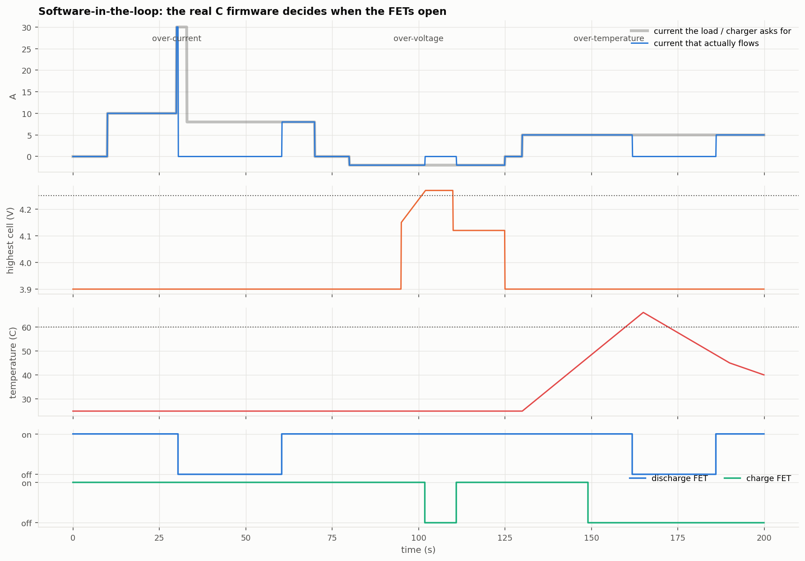
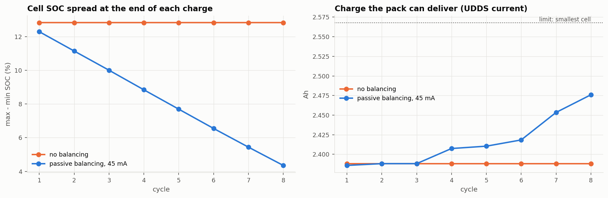

01Overview
A BMS has to answer two questions all the time: is the pack safe, and how much charge is left? Neither can be measured directly. Safety needs fast, reliable trips on voltage, current and temperature. State of charge (SOC) has to be estimated from voltage and current, and the obvious method, adding up current over time (Coulomb counting), drifts whenever the current sensor has an offset.
The project is built on public lab data for the LG HG2 cell from McMaster University (P. Kollmeyer, CC BY 4.0): a slow C/20 test for the open-circuit voltage curve, an HPPC pulse test for model parameters, and four EPA drive cycles for validation, all at 25 °C.
02Architecture
- Lab tests: C/20 charge and discharge, HPPC pulses
- Open-circuit voltage curve and 2-RC parameters vs SOC
- Validate the cell model on 4 drive cycles it was not fitted to
- Extended Kalman Filter for state of charge
- C firmware with tables generated from the Python model
- Software-in-the-loop tests on recorded data and injected faults
Cell model. v = OCV(SOC) − R0·i − V1 − V2, where V1 and V2 are two RC voltages with time constants around 1 s and 30–60 s, for charge transfer and diffusion. Every parameter is a table vs SOC.
EKF. It runs the model forward with the measured current (predict), then compares the model's voltage with the measured one and corrects SOC by the Kalman gain (update). The voltage pulls back the drift that a current-sensor offset causes in Coulomb counting.
| Firmware module | Does |
|---|---|
protection.c | over/under-voltage, over-current, short circuit, over/under-temperature; each with debounce and hysteresis |
soc_ekf.c | the EKF in single precision, tables generated from the Python model |
balancing.c | bleeds cells more than 10 mV above the lowest, only while charging or resting |
bms.c | one bms_step() per sample: protection, FET commands, SOC per cell, balancing mask |
03Design decisions
| Question | Decision |
|---|---|
| Which OCV curve? | The resting voltage after discharge, not the average of charge and discharge. A drive cycle sits on the discharge side of the hysteresis loop. This choice halved the drive-cycle error. |
| What to do below 20 % SOC? | The 2-RC fits ran into their parameter bounds there, so those fits are dropped and the last good values are held. |
| How much to trust the voltage? | Mid-SOC, 1 % of SOC moves the voltage only 6–10 mV, so the filter's noise settings have to keep it from over-correcting on the flat part of the curve. |
| How should protection trip? | Every fault has a debounce, so one noisy sample cannot trip it, and hysteresis or a retry timer, so it cannot chatter. |
| Balancing rules? | Bleed only while charging or resting, and never two neighbouring cells at once (a BQ76920 rule). |
| Current shunt? | 1 mΩ: 22 A over-current and 67 A short-circuit thresholds, 8.4 mA resolution. |
04Testing
| Check | Result |
|---|---|
| Cell model on 4 unseen drive cycles | voltage RMSE 14.5 / 16.1 / 23.7 / 20.4 mV (UDDS / LA92 / US06 / mixed) |
| EKF, starts 50 % wrong + 50 mA sensor offset | SOC RMSE 1.78 / 1.01 / 0.96 / 1.11 % |
| Coulomb counting with a perfect start | 4.69 / 3.04 / 1.29 / 2.40 %, drifting up to −8 % |
| Passive balancing, 4 mismatched cells | SOC spread 12.8 % → 4.4 % in 8 cycles, +3.7 % usable capacity |
| C firmware vs Python reference | max difference 0.0067 % SOC |
| Fault injection (software in the loop) | 6 / 6 trip and recovery timings match the requirements |
| Unit tests | 24 / 24, zero warnings with -Wall -Wextra -pedantic |


05What I'd change
- Everything is at 25 °C. A production model needs parameter tables vs temperature; the dataset includes −20 to 40 °C tests.
- The drive cycles were run on a different cell than the HPPC test (same model), so part of the remaining error is cell-to-cell difference.
- The BQ76920's own hardware protection is the faster, independent safety layer. Configuring it over I²C is not written yet.
- In city driving, regen pulses up to 5.3 A exceed the 4.5 A charge limit and would open the charge FET. A vehicle must cap regen torque at the BMS limit.